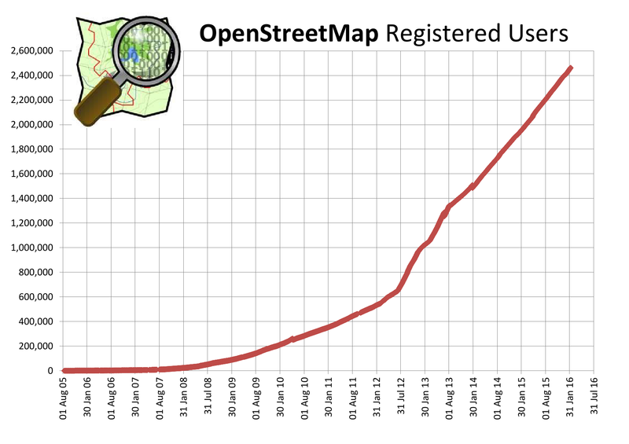
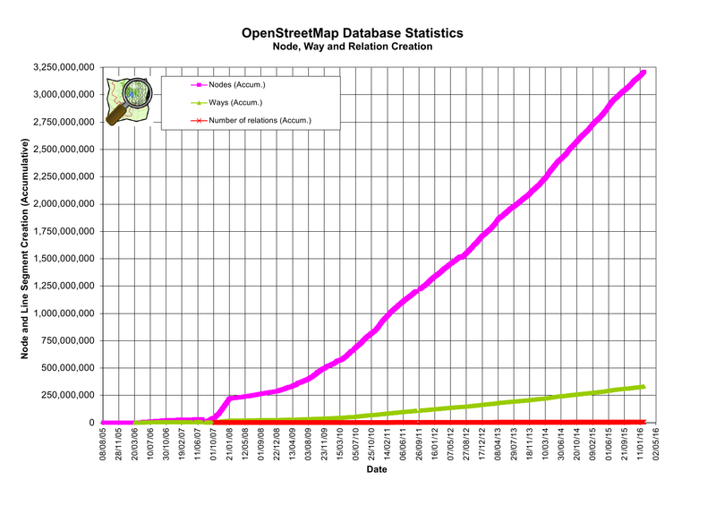

1. Introducción¶
OpenStreetMap, OSM, es la mayor base de datos geográfica de libre acceso que existe. Comenzó su andadura en 2004 de la mano de Steve Coast. La información la introducen y mantienen actualizada usuarios voluntarios de todo el mundo. Toda la información de la base de datos es de libre acceso y utilización. A la fecha de escribir estas notas había más de dos millones y medio de usuarios registrados y el volumen de información almacenado era de unos 50 Gigabytes en formato comprimido. Por ejemplo, el número de nodos almacenados a la fecha era de unos 3.350 mil millones.
 {kind=link}
{kind=link}
1.1. Flujo de trabajo¶
El flujo de trabajo con datos procedentes de OpenStreetMap suele seguir las siguientes fases (ver figura ):
- 1.- Descarga de datos brutos de OSM: en primer lugar se trata de obtener los datos existentes en la base de datos de OpenStreetMap correspondientes a la zona que estemos estudiando. Normalmente se obtienen todos los datos de una determinada zona en algunos de los formatos que nos ofrece OSM. El más habitual es el formato .osm, que es un formatos XML.
- 2.- Procesamiento de datos brutos y extracción de los elementos de interés: Habrá que extraer de los ficheros obtenidos de la base de datos, los elementos en los que estemos interesados. Si por ejjemplo estamos haciendo un estudio acerca de las carreteras de una zona, habrá que extraer todos los elementos deltipo Node, Way o Relation que tengan información acerca de las carreteras.
- 3.- Conversión a otros formatos vectoriales: normalmente trabajaremos en un programa GIS o conuna base de datos. Los datos que nos interesan y que hemos extraido en la fase anterior habrá que convertirlos al formato en el que tengamos pensado trabajar. Puede ser un formato vectorial como el shapefile o quizás haya que importarlos desde la base de datos con la que pensemos hacer el análisis.
- 4.- Procesamiento y cálculos: una vez se dispone de los datos en nuestro formato de trabajo, realizaremos los cálculos y operaciones de análisis espacial que nos interesen.
- 5.- Salida gráfica o alfanumérica de los resultados: por último, habra que plasmar los resultados de nuestro trabajo en forma gráfica o mediante los informes correspondientes.
{kind=link}
A día de hoy hay muchas herramientas que pueden ser utilizadas en cada una de las fases descritas. En este taller vamos a dar algunas ideas de cómo utilizar algunas de ellas. Existen en la red numerosos documentos que han servido para la preparación de esta documentación y que pueden ser consultadas para ampliar la información que aquí se explica.